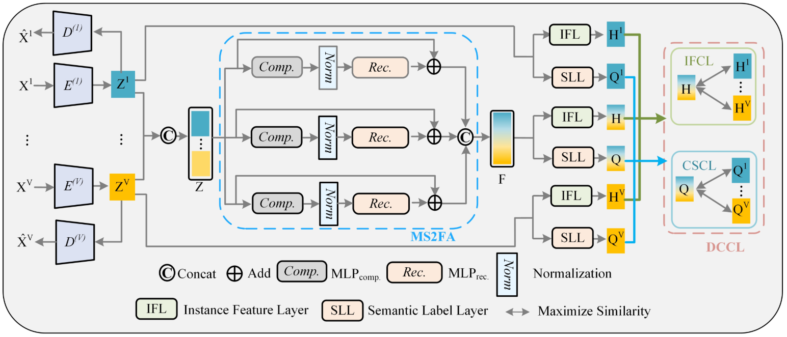
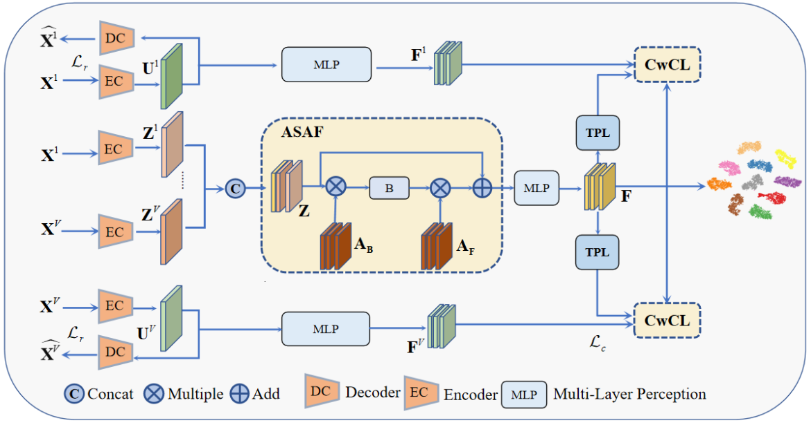
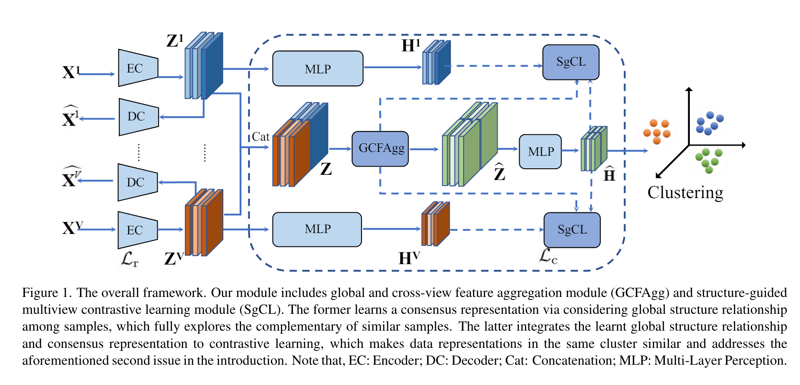

I am a Ph.D. student in School of Computer Science and Engineering, Southeast University, since 2024.
2024.02 One paper was accepted by IEEE Transactions on Neural Networks and Learning Systems.
2023.02 One paper was accepted by IEEE CVPR.

Yuanyang Zhang, Weiqing Yan, Chang Tang, Wujie Zhou, Jian Jin, “
Multi-branch Space Sharing Feature Aggregation Network for Dual Contrastive Multi-view Representation Learning,” Under Review.
[Paper]
[Code]

Weiqing Yan, Yuanyang Zhang, Chang Tang, Wujie Zhou, Weisi Lin, “Anchor-sharing and Cluster-wise Contrastive
Network for Multi-View Representation Learning,” IEEE Transactions on Neural Networks and Learning Systems, 2024.
[Paper]
[Code]

Weiqing Yan, Yuanyang Zhang, Chenlei Lv, Chang Tang, Guanghui Yue, Liang Liao, Weisi Lin, “GCFAgg: Global and Cross-view Feature Aggregation for Multi-view Clustering,” IEEE CVPR, 2023.
[Paper]
[Code]
Outstanding Graduate Students of Yantai University in 2023.
IEEE Transactions on Knowledge and Data Engineering
IEEE Transactions on Neural Networks and Learning Systems
IEEE Transactions on Multimedia
Information Science
ACM International Conference on Multimedia
IEEE/CVF Conference on Computer Vision and Pattern Recognition (CVPR)